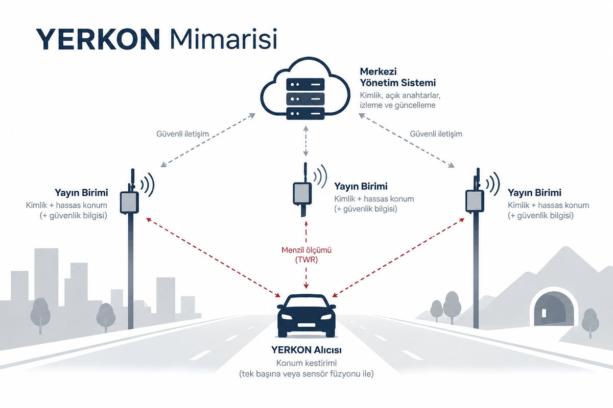

Mimari
Üç parça: ölçülmüş konumlarda duran yayın birimleri, konumunu kendi hesaplayan alıcılar, ve kimlikleri güncel tutan merkezi yönetim sistemi.

Üç parça
- Yayın birimi. Sabit bir noktaya, direğe, yol kenarı ünitesine, haberleşme tesisine ya da tünelin içine takılan verici. Alıcı sorduğunda üç şey yayınlar: kim olduğunu, kurulumda ölçülen sabit konumunu, ve bunların sahte olmadığını gösteren imzayı.
- Alıcı. Araca ya da cebe girer. Yayın birimlerinden ölçtüğü mesafeleri, aracın kendi sensörleriyle birleştirir: hareketi ölçen atalet birimi, tekerleğin kaç tur döndüğü ve harita. Böylece uydu hiç görünmese de konum vermeye devam eder.
- Merkezi yönetim sistemi. Hangi birimin hangi anahtara sahip olduğunun listesini tutar. Alıcı bu listeyi indirip her birimin imzasını kontrol eder, böylece sahte bir birimle konuşmaz.
Neden çift yönlü ölçüm
Bir sinyalin iki birime kaç saniye arayla vardığına bakan sistemlerde (TDoA), aynı doğruluğa ulaşmak için birimler arasında hassas bir ağ geneli zaman senkronizasyonu ve bunu sağlayan ek altyapı gerekebilir. Örneğin milyarda bir saniyenin altına inmek, birim başına yaklaşık 100 000 liralık atomik saat ve IEEE 1588 PTP altyapısı demek. Çift yönlü ölçümde bu ağ geneli senkronizasyona gerek yok: sinyalin havada geçirdiği süre, birimle alıcı arasındaki kısa bir gidiş gelişten çıkıyor.
Simülasyon bu farkı ölçtü. Düzeltilmemiş 10 ppm'lik bir saat kayması tek yönlü ölçümde 24,1 m hata bırakır, çift yönlüde 0,3 mm. Kaymanın kendisi 0,0793 ppm ölçüldü, ve bu projede artık tahmin olmayan tek değerdir.
Her yayın birimi kendi özel anahtarını gizli tutar ve açık anahtarını merkezi sisteme aktarır. Anahtar 256 bit ECC, imza ECDSA. Mesajların tekrar gönderilmesini sıra numarası ya da sayaç engeller.
Aynı 10 ppm'lik saat kaymasının iki ölçüm yöntemine maliyeti. Aradaki fark seksen bin kat, ve bu yüzden çift yönlü ölçüm her direğe atomik saat koymadan çalışabiliyor. İkisi de simülasyonun ölçtüğü değer.
Üç kurulum grubu
- Şehir içi. Çok sayıda, kısa menzilli birim: baz istasyonları, trafik levhaları ve lambaları, reklam panoları, yol kenarı aydınlatmaları. Semtech SX1280 gibi bir 2,4 GHz LoRa modülü için üretici, açık görüş hattında yaklaşık ±1 m mesafe ölçüm doğruluğu veriyor. Bu bir birim ile alıcı arasındaki tek mesafenin doğruluğu; nihai konum hatası değil. Konum hatası birimlerin geometrisine, çok yollu yayılıma ve engellere de bağlı, ve ayrıca HPE P50 ile HPE P95 üzerinden değerlendirilecek.
- Kırsal. Az sayıda ama geniş alana ulaşan nokta: akıllı ulaşım sistemi ve yol kenarı üniteleri, baz istasyonu sahaları, demiryolu ve karayolu altyapısı. Türkiye'de 2,4 GHz'de yayın gücü bu bant genişliğinde yaklaşık 12 dBm ile sınırlı, bu yüzden yükselteçli bir modül (E28-2G4M27S) burada ek menzil vermiyor; kırsal birim şehir içindekiyle aynı kartı kullanıyor ve menzili direğin yüksekliği ve açık görüş sağlıyor. YERKON'da 8-10 km bir haberleşme ve kapsama hedefi olarak alınıyor ve o mesafedeki ölçüm doğruluğu saha deneyleriyle doğrulanacak. Orman, engebe ve kapalı görüş yüzünden kırsal performansın şehir içine göre düşmesi bekleniyor; sonuç HPE P50 ve HPE P95 ile raporlanacak.
- Kritik bölge. Tüneller, metro ve istasyon alanları, liman ve havalimanları, afet lojistik alanları. Qorvo DWM3000 gibi 6,5-8 GHz bir UWB modülü, görüş hattı açıkken yaklaşık 10 cm sınıfında mesafe ölçüm hassasiyeti hedefleyen uygulamalarda kullanılabiliyor. Nihai konum hatası buna eşit değil: geometriye, kalibrasyona, çok yollu yayılıma ve engellere bağlı, ve saha testlerinde HPE P50 ile HPE P95 üzerinden ayrıca ölçülecek.
Alıcı modülleri
- Yaya. Az pil harcasın ve cepte taşınsın diye tasarlandı. Şehirde ve kırsalda SX1280, tünelde ve kapalı alanda DWM3000 kullanır. ESP32-S3 ile telefona bağlanır; sinyal kesilirse BNO085 hareket sensörüyle son konumdan devam eder. UWB için seramik anten, 2,4 GHz için kart üzerinde çip anten.
- Kara aracı. STM32 üzerine kurulu, LCD harita ekranı var. Uyumlu araçların CAN hattına bağlanıp tekerlek hız sensörlerinden ve direksiyon açısından anlık veri alır. Yaya modülü gibi iki telsizi birden taşır: geniş alan için SX1280, kritik bölge için DWM3000. DWM3000 kendi dahili antenini kullanır; SX1280 için araç tavanına 3-5 dBi kazançlı bir çubuk anten konur.
- Nesnelerin interneti alıcısı. Kapalı ve yarı açık alanda çalışan robot filoları için. Yaygın robot işletim sistemleriyle doğrudan konuşur; tekerleğin kaç tur döndüğüne ve kendi hareket sensörüne bakarak konumunu sürekli düzeltir. Çoğu depo ve fabrikada DWM3000 yeter.
Donanım ve fiyatı
| Ürün | Raporda 1 | Raporda 100 | Şimdi 1 | Şimdi 100 | Şimdi 1000 |
|---|---|---|---|---|---|
| Şehir içi ve kırsal yayın birimi | 1983,71 TL | 1366,07 TL | 1158,56 TL | 797,84 TL | 718,05 TL |
| Yükselteçli yayın birimi | 1549,67 TL | 1082,68 TL | 1310,80 TL | 915,79 TL | 824,21 TL |
| Kritik bölge yayın birimi | 2241,42 TL | 1634,44 TL | 1662,69 TL | 1212,43 TL | 1091,19 TL |
| Yaya alıcısı | 3913,16 TL | 3117,74 TL | 2987,03 TL | 2379,86 TL | 2141,87 TL |
| Kara aracı alıcısı | 5202,69 TL | 4002,29 TL | 3748,56 TL | 2883,67 TL | 2595,30 TL |
- Rapordaki iki sütun, 1 adet ve 100 adet, raporun kendi fiyatları. "Şimdi" sütunları aynı işi daha ucuza yapan parçalarla: SX1280 yongasını taşıyan EBYTE E28-2G4M12S, LCSC'den alınan DWM3000 ve daha küçük bir STM32. Tablo 1000 adetlik fiyatla hesaplanıyor, çünkü işletme modeli zaten bin birimlik bir ağ varsayıyor. Her parça, satıcısı ve fiyatı Maliyet sayfasında.
- Fiyatlar yalnızca ana parçaların maliyeti. Kartın basılması ve parçaların lehimlenmesi, direnç ve kondansatörler, kablolama, test, ayar, belgelendirme, vergi ve kargo bu rakamların dışında; sahadaki montaj ayrı bir kalem olarak tabloya giriyor.
- İki alıcı da hem SX1280 hem DWM3000 taşıyor. Bu sayede aynı cihaz yolda şehir birimleriyle, tünele girince tünel birimleriyle ölçüyor; kullanıcı hiçbir şeyi değiştirmiyor.